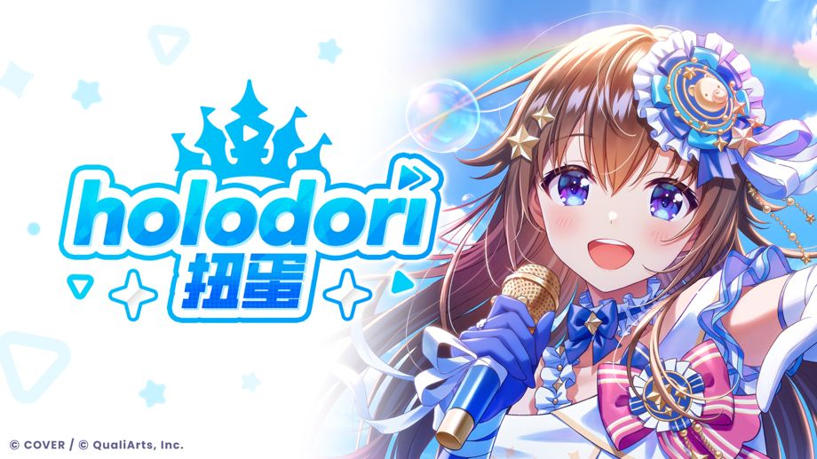

总共54名holo成员登场的“holodori扭蛋”开放！
◆活动时间
开服～
关于Holo贴纸
新获得已经达到最大绽放阶段的★3、★4成员时，可以获取“Holo贴纸”。
持有的扭蛋Pt如果未在期限内使用，也会兑换为“Holo贴纸”。
“Holo贴纸”可以在［商店］→［Holo贴纸兑换］中兑换各种各样的道具。
要查看详情，请点击［帮助］→［商店］→［关于Holo贴纸兑换］。
关于特殊Holo贴纸
获得★5成员，即可获取“特殊Holo贴纸”。
另外，获得已达最大绽放阶段的★5成员时，可以获得更多“特殊Holo贴纸”。
“特殊Holo贴纸”可以在［商店］→［特殊Holo贴纸兑换］中兑换各种各样的道具。
要查看详情，请点击［帮助］→［商店］→［关于特殊Holo贴纸兑换］。
注意事项
・举办时间和内容，可能不经预告直接变更。
・要查看本扭蛋的注意事项，请点击［扭蛋界面］→［扭蛋详情］→［注意事项］。
・要查看本扭蛋的卡池内容，请点击［扭蛋界面］→［扭蛋详情］→［出现概率］。